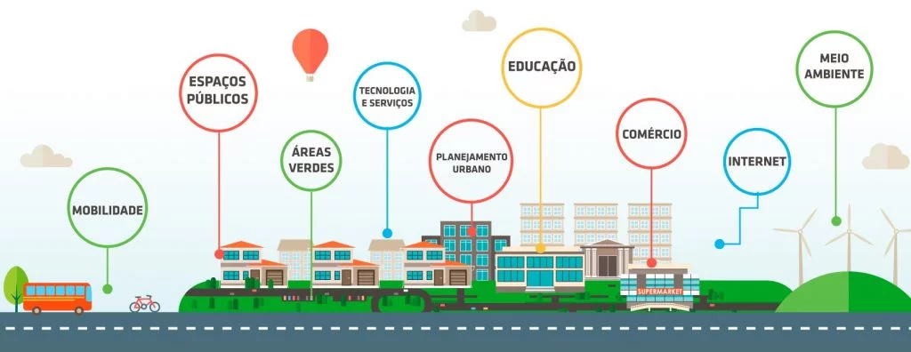

Cidades Inteligentes: O futuro já chegou!
E aí, já ouviu falar em cidades inteligentes? Sabe aquela ideia de que as cidades do futuro vão ser super tecnológicas e tudo vai funcionar de um jeito mais fácil e sustentável? Pois é, as cidades inteligentes são exatamente isso!
O que é uma cidade inteligente?
Imagine uma cidade onde você pode pegar o ônibus sem precisar de dinheiro, onde as ruas se iluminam sozinhas quando você passa por perto e onde o lixo é separado de forma automática. Parece coisa de filme, né? Mas isso já é realidade em muitas cidades pelo mundo!
Mas afinal, o que faz uma cidade ser inteligente?
- Tecnologia para todos: As cidades inteligentes usam a tecnologia para melhorar a vida das pessoas. Isso inclui internet rápida, aplicativos para tudo e sensores que monitoram a cidade 24 horas por dia.
- Sustentabilidade em primeiro lugar: Além de ser tecnológica, uma cidade inteligente também precisa ser sustentável. Isso significa usar energia limpa, reciclar o lixo e cuidar do meio ambiente.
- Cidadãos conectados: As pessoas são o coração das cidades inteligentes. Por isso, é importante que elas participem das decisões e usem as tecnologias disponíveis para melhorar a cidade.
Quais os benefícios das cidades inteligentes?
- Mais qualidade de vida: Com menos trânsito, mais áreas verdes e serviços mais eficientes, a vida nas cidades inteligentes é mais tranquila e saudável.
- Economia de energia e recursos: A tecnologia ajuda a otimizar o uso de energia e recursos naturais, reduzindo custos e o impacto ambiental.
- Mais segurança: Com sistemas de monitoramento e segurança inteligentes, as cidades ficam mais seguras para todos.